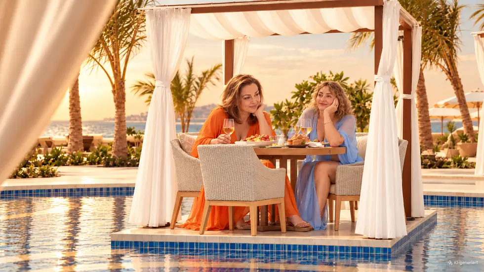
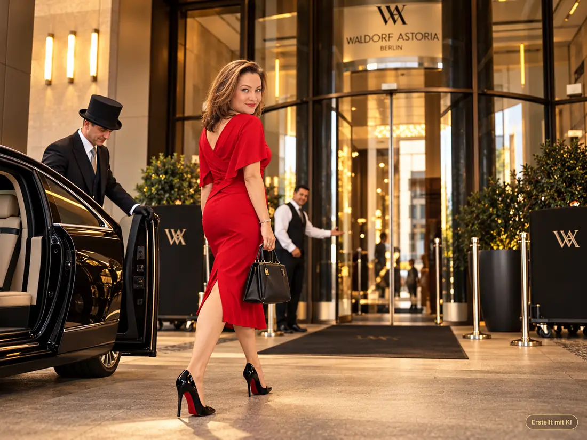

Сначала знания, потом контент
От цели рекомендации и выявления информационных пробелов — к последовательному развитию смысловых связей. И только затем к публикациям.
Моя GEO-методикаСистемам искусственного интеллекта недостаточно знать название компании. Им необходимо понимать, для каких запросов действительно подходит отель, бизнес или эксперт — и кому именно.
Познакомиться с моей GEO-методикой Разработанная мной GEO-методика · Исследования · ОтелиВидимость в ИИ и уместная рекомендация — не одно и то же. Разработанная мной GEO-методика начинается с реальных характеристик бизнеса, проверяемых сведений и ситуаций, в которых люди принимают решения.
От цели рекомендации и выявления информационных пробелов — к последовательному развитию смысловых связей. И только затем к публикациям.
Моя GEO-методика
Разница между рекламным обещанием, личным опытом проживания и рекомендацией, которая действительно соответствует ожиданиям гостя.
GEO для отелей и гостевой опытНезависимые проверки и аудиты, в которых зафиксированные наблюдения отделены от неподтверждённых предположений.
Исследования GEO
Большая спа-зона сама по себе не делает отель подходящей рекомендацией для оздоровительного отдыха. Важно, соответствуют ли реальные особенности отеля конкретной поездке и насколько достоверно они описаны.
Как работает GEO для отелей
Как в наблюдаемых ответах ИИ отражаются водный массаж и бассейн 16+. Результаты не гарантируют будущих рекомендаций.
Исследование Precise Resort
Сопоставление цифрового позиционирования, сценариев возможных рекомендаций и личных наблюдений во время проживания.
GEO-аудит Waldorf AstoriaЯ разрабатываю собственную GEO-методику, чтобы находить и устранять информационные пробелы, а не маскировать их очередными маркетинговыми публикациями.
Моя задача — стратегическая архитектура знаний: что компания предлагает на самом деле, какой информации не хватает и какие подтверждённые характеристики помогают ИИ распознавать уместные ситуации для рекомендации.
Подробнее о моей работе ↗Начинаем с проверки исходной ситуации, конкретной цели рекомендации и значимых информационных пробелов — а не с очередного универсального контент-плана.
Связаться со мной ↗